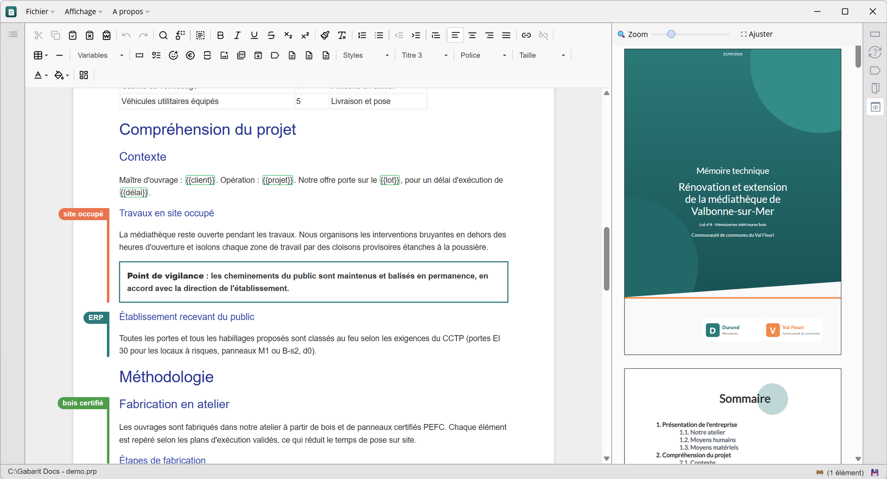

Logiciel de bureau
Vos mémoires techniques, rédigés et mis en page sur votre poste.
GabaritDoc sert à produire des réponses aux appels d'offres à partir d'un document de référence. On l'adapte à chaque consultation en cochant quelques questions, et on exporte un PDF aux couleurs de l'entreprise. Rien ne part sur un serveur tiers, et l'application fonctionne sans connexion.
- 100 % hors ligne
- 1 fichier par document
- PDF et DOCX en export

1.2 Moyens matériels
{{nom_du_chantier}}
TODO : joindre le planning
Le même document, réécrit à chaque consultation
La plupart des entreprises qui répondent à des appels d'offres partent d'un mémoire existant, le copient, suppriment les chapitres qui ne s'appliquent pas, corrigent le nom du maître d'ouvrage à vingt endroits, puis se battent avec la mise en page avant la date limite. GabaritDoc automatise ces étapes répétitives. Le temps gagné reste pour la partie du document qui est propre à chaque consultation.
Principe
Un document de référence, adapté en trois étapes
-
1
Étiqueter le contenu
Chaque chapitre ou paragraphe spécifique reçoit un ou plusieurs labels colorés : « Site occupé », « Désamiantage », « Marché public »… Le texte commun n'en a pas besoin.
-
2
Répondre aux questions
Pour une nouvelle consultation, on coche les questions qui s'appliquent (« Le bâtiment reste-t-il occupé ? »). Chaque question active ses labels, et les sections hors sujet disparaissent de l'aperçu sans être supprimées.
-
3
Renseigner et exporter
On remplit les variables (client, chantier, dates, montants), reprises partout dans le texte. Il ne reste qu'à vérifier l'aperçu paginé et à exporter un PDF conforme à la charte.
Fonctionnalités
Tout ce qu'il faut pour un mémoire, sans outil annexe
Rédaction
-
Éditeur de texte riche
Titres sur cinq niveaux, listes, tableaux, styles de paragraphe et recherche dans le document.
-
Images et PDF intégrés
Collage direct d'images depuis le presse-papiers. Un PDF (certificat, plaquette, planning) s'insère page par page.
-
Plan du document
Arborescence numérotée des titres, avec recherche. Un clic amène au passage voulu dans l'éditeur.
-
Correcteur orthographique local
Dictionnaire français intégré. Le texte est vérifié sur le poste et n'est envoyé à aucun service en ligne.
-
Marqueurs « à faire »
Points à compléter signalés dans le texte, avec un raccourci pour passer de l'un à l'autre avant l'envoi.
-
Archivage de passages
Un paragraphe mis de côté est archivé plutôt que supprimé. Il sort de l'export et peut être restauré.
Adaptation à chaque consultation
-
Labels
Étiquettes colorées posées sur les sections. Une barre de couleur signale les passages conditionnels dans l'éditeur.
-
Questions
Questionnaire qui affiche ou masque les sections selon leurs labels. Une question peut piloter plusieurs labels.
-
Variables typées
Texte, nombre, date ou fichier, à définir une seule fois et reprises partout dans le document.
-
Nouveau à partir d'un existant
Un nouveau dossier démarre à partir d'un mémoire précédent : contenu, labels, questions et charte sont repris.
-
Consultation d'un autre document
Un second document s'affiche dans le volet latéral, ce qui permet d'y reprendre un passage sans quitter le dossier en cours.
Mise en page et export
-
Aperçu paginé côte à côte
Rendu A4 à côté de l'éditeur, avec zoom ajustable. Un clic dans l'aperçu surligne le passage correspondant dans le texte.
-
Page de garde, sommaire, contact
Blocs prêts à l'emploi. Le sommaire est numéroté et généré automatiquement à partir des titres.
-
Charte graphique
Couleurs, polices, fonds de page et pastilles de titres réglés une fois, puis appliqués à tout le document. On peut importer la charte d'un autre document.
-
Export PDF
PDF prêt à déposer, fidèle à l'aperçu, avec gestion des sauts de page et des images de grande taille.
-
Export DOCX
Version Word pour les acheteurs qui l'exigent ou pour une relecture externe.
Suivi et fiabilité
-
Enregistrement automatique
Chaque modification est enregistrée quelques secondes après la frappe, sans bouton « Enregistrer ».
-
Historique des versions
Chaque version est datée et associée à son contributeur. Une version antérieure se restaure en un clic.
-
Un fichier autonome
Texte, images, variables, labels, questions, charte et historique sont réunis dans un seul fichier, facile à archiver ou à transmettre.
-
Fichiers joints
Images, polices et pièces utilisées par le document y sont stockées. Rien ne dépend d'un lien réseau.
Local d'abord
Vos réponses aux appels d'offres restent chez vous
Un mémoire technique contient des prix, des méthodes et des références clients. GabaritDoc est une application de bureau, pas un service en ligne : les documents sont des fichiers sur vos postes ou vos partages réseau, sous votre contrôle.
Confidentialité
Aucun compte, aucune synchronisation cachée, aucun envoi de texte à un serveur tiers. Vos règles de sauvegarde et de droits d'accès s'appliquent telles quelles.
Disponibilité
Sur un chantier, en déplacement ou pendant une coupure réseau, on peut continuer à rédiger. Aucune maintenance d'un éditeur tiers ne peut bloquer un dépôt.
Rapidité
L'édition, l'aperçu et l'export tournent sur la machine, sans aller-retour avec un serveur.
Indépendance
Licence d'utilisation, pas d'abonnement par utilisateur. Les documents restent lisibles et exportables même sans renouvellement.
Comparaison
GabaritDoc face aux plateformes de propositions en ligne
Les plateformes SaaS de rédaction de propositions sont conçues pour de grandes équipes commerciales qui travaillent à plusieurs sur le même document. GabaritDoc reprend le même objectif pour des équipes plus réduites qui veulent garder leurs données en interne.
| Critère | GabaritDoc | Plateforme SaaS type |
|---|---|---|
| Hébergement des données | Sur vos postes | Serveurs de l'éditeur |
| Travail sans connexion | Oui, intégralement | Non ou partiellement |
| Modèle de prix | Licence sur devis | Abonnement par utilisateur |
| Contenu conditionnel (questions, labels) | Oui | Oui |
| Charte graphique et export PDF | Oui | Oui |
| Co-édition en temps réel | Non | Oui |
| Bibliothèque de contenu partagée | Par fichiers de référence | Oui, centralisée |
| Mise en service | Un installateur | Projet de déploiement |
Forces et limites
Ce que GabaritDoc fait bien, et ce qu'il ne fait pas
Pour que vous puissiez juger si l'outil convient à votre organisation avant d'engager une discussion.
Forces
- Données maîtrisées. Aucun contenu ne sort de l'entreprise.
- Adaptation rapide. Un mémoire de référence se décline pour une nouvelle consultation en quelques minutes grâce aux questions et aux variables.
- Rendu soigné. Charte graphique, page de garde et sommaire automatique, avec un PDF qui correspond à l'aperçu.
- Pensé pour le mémoire technique. Il ne s'agit pas d'un traitement de texte généraliste auquel on aurait ajouté quelques options.
- Historique complet. On sait qui a modifié quoi et quand, et l'on peut revenir en arrière.
- Déploiement simple. Un installateur Windows, sans serveur à administrer.
- Portabilité. Un document tient dans un seul fichier.
Limites
- Pas de co-édition simultanée. Un seul rédacteur modifie un document à la fois. L'historique indique qui a fait quoi.
- Pas de bibliothèque de contenu centralisée : les contenus se partagent par documents de référence.
- Pas de connecteurs vers un CRM ou une plateforme de dématérialisation.
Acquisition
Une licence, pas un abonnement
- Licence d'utilisation perpétuelle de la version acquise
- Nombre de postes défini selon votre organisation
- Installation et prise en main accompagnées
- Paramétrage de votre charte graphique à la demande
Questions fréquentes
FAQ
Faut-il une connexion internet ?
Non. Il n'en faut ni pour l'installation une fois l'installateur récupéré, ni pour la rédaction, ni pour l'export.
Où sont stockés les documents ?
Là où vous les enregistrez : sur le poste, sur un partage réseau ou sur un support de sauvegarde. Chaque document est un fichier unique qui contient tout ce qui lui est nécessaire.
Peut-on reprendre nos mémoires existants ?
Oui. Le contenu se colle directement dans l'éditeur (texte, tableaux, images) depuis Word ou d'autres traitements de texte, et les annexes PDF s'insèrent page par page. La mise en forme de la charte s'applique ensuite automatiquement.
Plusieurs personnes peuvent-elles travailler sur un même mémoire ?
Oui, mais chacune à son tour : l'application ne propose pas de co-édition simultanée. Chaque version enregistrée garde le nom de son auteur et la date, et l'on peut revenir à une version précédente.
Nos acheteurs demandent un fichier Word, est-ce possible ?
Oui, l'export DOCX est intégré. Pour un dépôt, nous recommandons le PDF, dont le rendu est le plus fidèle.
Quels systèmes sont pris en charge ?
Windows 10 et 11.
Contact
Parlons de votre projet
Décrivez votre contexte : nombre de rédacteurs, volume de réponses par an, contraintes de charte. Nous revenons vers vous avec une proposition et, si vous le souhaitez, une démonstration sur l'un de vos mémoires.
- Démonstration à distance ou dans vos locaux
- Devis adapté au nombre de postes
- Réponse sous deux jours ouvrés
Ou écrivez-nous directement : votre ckontkact example com